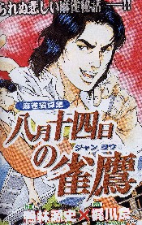
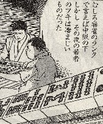
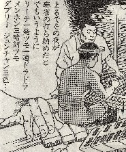
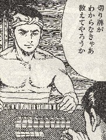

（79）８月14日の雀鷹
今月の近オリ（'06．９月号）に、「八月十四日の雀鷹」という読み切りが載っている。

昭和20年８月14日、まさに終戦の前夜。最後の特攻隊員として出撃する航空兵が、直前に基地の近くの飯場で麻雀を楽しむ物語。その麻雀で、兵隊はツキにツキまくってアガリまくる。
 
そりはいいが、主人公がアガったというアガリ役10種のうち、昭和20年の８月時点の日本の一般麻雀には存在しなかった、あるいは採用されていなかった役がいくつかある。そりが何番と何番で、合計何種類なのか分かる人、ハ〜イ (-_-)/
(1) リーチ (2) 一発 (3) ツモホー (4) 一通 (5) ドラ (6) メンホン
(7) 三暗刻 (8) ダブリー (9) ジュンチャン (10) サンシキ
答
↓
答 (1) (2) (5) (6) (8) (9) (10)の計７種類。
(3)ツモホー (4)一通 (7)三暗刻 の３種だけが当時も存在。
↓ついでながら、捨て牌６枚切りなんてのも最近の話。当時は下家の捨て牌列にぶつかる寸前まで並べたくるのが普通だった。
